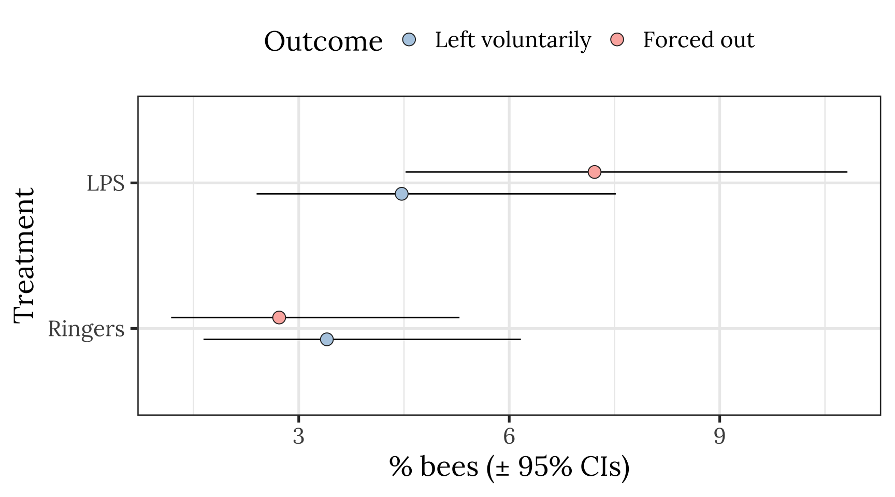
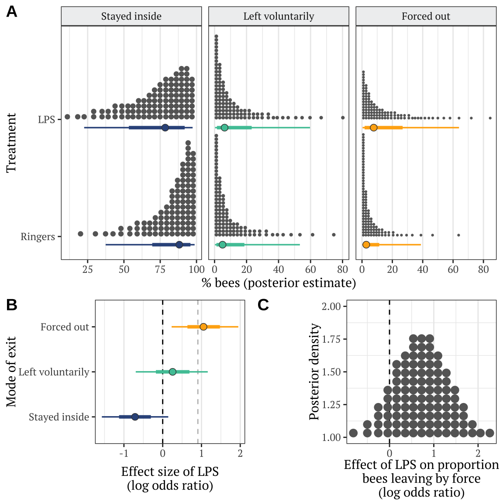
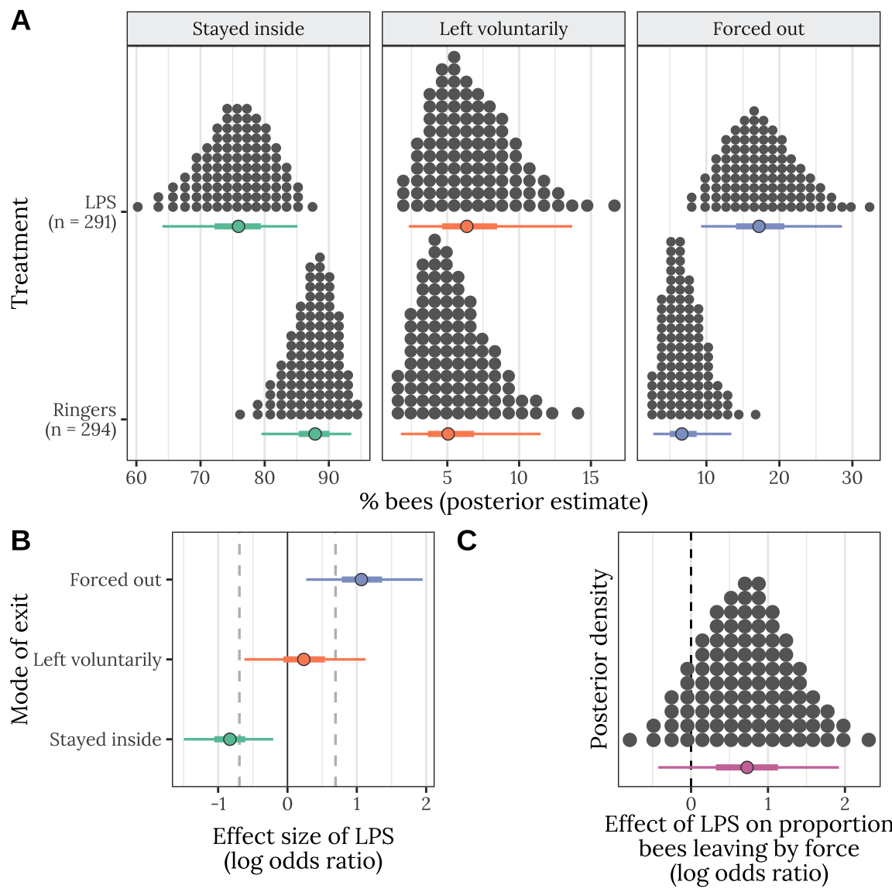

Last updated: 2021-01-12
Checks: 7 0
Knit directory: social_immunity/
This reproducible R Markdown analysis was created with workflowr (version 1.6.2). The Checks tab describes the reproducibility checks that were applied when the results were created. The Past versions tab lists the development history.
Great! Since the R Markdown file has been committed to the Git repository, you know the exact version of the code that produced these results.
Great job! The global environment was empty. Objects defined in the global environment can affect the analysis in your R Markdown file in unknown ways. For reproduciblity it’s best to always run the code in an empty environment.
The command set.seed(20191017) was run prior to running the code in the R Markdown file. Setting a seed ensures that any results that rely on randomness, e.g. subsampling or permutations, are reproducible.
Great job! Recording the operating system, R version, and package versions is critical for reproducibility.
Nice! There were no cached chunks for this analysis, so you can be confident that you successfully produced the results during this run.
Great job! Using relative paths to the files within your workflowr project makes it easier to run your code on other machines.
These are the previous versions of the repository in which changes were made to the R Markdown (analysis/experiment2.Rmd) and HTML (docs/experiment2.html) files. If you’ve configured a remote Git repository (see ?wflow_git_remote), click on the hyperlinks in the table below to view the files as they were in that past version.
| File | Version | Author | Date | Message |
|---|---|---|---|---|
| Rmd | 9c79d22 | lukeholman | 2021-01-12 | mostly ready |
| html | 939ecd0 | lukeholman | 2021-01-11 | Build site. |
| Rmd | 78386bb | lukeholman | 2021-01-11 | tweaks 2021 |
| html | eeb5a09 | lukeholman | 2020-11-30 | Build site. |
| Rmd | 7aa69df | lukeholman | 2020-11-30 | Added simple models |
| html | 7131f65 | lukeholman | 2020-08-21 | Build site. |
| Rmd | c80c978 | lukeholman | 2020-08-21 | Fix summarise() warnings |
| html | 4f23e70 | lukeholman | 2020-08-21 | Build site. |
| Rmd | c5c8df4 | lukeholman | 2020-08-21 | Minor fixes |
| html | 1bea769 | lukeholman | 2020-08-21 | Build site. |
| Rmd | d1dade3 | lukeholman | 2020-08-21 | added supp material |
| html | 7bf607f | lukeholman | 2020-05-02 | Build site. |
| Rmd | 83fa522 | lukeholman | 2020-05-02 | tweaks |
| html | 3df58c2 | lukeholman | 2020-05-02 | Build site. |
| html | 2994a41 | lukeholman | 2020-05-02 | Build site. |
| html | d166566 | lukeholman | 2020-05-02 | Build site. |
| html | fedef8f | lukeholman | 2020-05-02 | Build site. |
| Rmd | 6c7445f | lukeholman | 2020-05-02 | tweak colours |
| html | 4cb9bc1 | lukeholman | 2020-05-02 | Build site. |
| Rmd | 14377be | lukeholman | 2020-05-02 | tweak colours |
| html | 14377be | lukeholman | 2020-05-02 | tweak colours |
| html | fa8c179 | lukeholman | 2020-05-02 | Build site. |
| Rmd | f188968 | lukeholman | 2020-05-02 | tweak colours |
| html | f188968 | lukeholman | 2020-05-02 | tweak colours |
| html | 2227713 | lukeholman | 2020-05-02 | Build site. |
| Rmd | f97baee | lukeholman | 2020-05-02 | Lots of formatting changes |
| html | f97baee | lukeholman | 2020-05-02 | Lots of formatting changes |
| html | 1c9a1c3 | lukeholman | 2020-05-02 | Build site. |
| Rmd | 3d21d6a | lukeholman | 2020-05-02 | wflow_publish("*", republish = T) |
| html | 3d21d6a | lukeholman | 2020-05-02 | wflow_publish("*", republish = T) |
| html | 93c487a | lukeholman | 2020-04-30 | Build site. |
| html | 5c45197 | lukeholman | 2020-04-30 | Build site. |
| html | 4bd75dc | lukeholman | 2020-04-30 | Build site. |
| Rmd | 12953af | lukeholman | 2020-04-30 | test new theme |
| html | 12953af | lukeholman | 2020-04-30 | test new theme |
| html | d6437a5 | lukeholman | 2020-04-25 | Build site. |
| html | e58e720 | lukeholman | 2020-04-25 | Build site. |
| html | 71b6160 | lukeholman | 2020-04-25 | Build site. |
| Rmd | 76a317d | lukeholman | 2020-04-25 | tweaks |
| html | 2235ae4 | lukeholman | 2020-04-25 | Build site. |
| Rmd | 99649a7 | lukeholman | 2020-04-25 | tweaks |
| html | 99649a7 | lukeholman | 2020-04-25 | tweaks |
| html | 0ede6e3 | lukeholman | 2020-04-24 | Build site. |
| Rmd | a1f8dc2 | lukeholman | 2020-04-24 | tweaks |
| html | 8c3b471 | lukeholman | 2020-04-21 | Build site. |
| Rmd | 1ce9e19 | lukeholman | 2020-04-21 | First commit 2020 |
| html | 1ce9e19 | lukeholman | 2020-04-21 | First commit 2020 |
| Rmd | aae65cf | lukeholman | 2019-10-17 | First commit |
| html | aae65cf | lukeholman | 2019-10-17 | First commit |
# All but 1 of these packages can be easily installed from CRAN.
# However it was harder to install the showtext package. On Mac, I did this:
# installed 'homebrew' using Terminal: ruby -e "$(curl -fsSL https://raw.githubusercontent.com/Homebrew/install/master/install)"
# installed 'libpng' using Terminal: brew install libpng
# installed 'showtext' in R using: devtools::install_github("yixuan/showtext")
library(showtext)
library(brms)
library(bayesplot)
library(tidyverse)
library(gridExtra)
library(kableExtra)
library(bayestestR)
library(tidybayes)
library(cowplot)
library(car)
source("code/helper_functions.R")
# set up nice font for figure
nice_font <- "Lora"
font_add_google(name = nice_font, family = nice_font, regular.wt = 400, bold.wt = 700)
showtext_auto()
exp2_treatments <- c("Ringers", "LPS")
durations <- read_csv("data/data_collection_sheets/experiment_durations.csv") %>%
filter(experiment == 2) %>% select(-experiment)
outcome_tally <- read_csv(file = "data/clean_data/experiment_2_outcome_tally.csv") %>%
mutate(
outcome = str_replace_all(outcome, "Stayed inside the hive", "Stayed inside"),
outcome = str_replace_all(outcome, "Left of own volition", "Left voluntarily"),
outcome = factor(outcome, levels = c("Stayed inside", "Left voluntarily", "Forced out")),
treatment = str_replace_all(treatment, "Ringer CHC", "Ringers"),
treatment = str_replace_all(treatment, "LPS CHC", "LPS"),
treatment = factor(treatment, levels = exp2_treatments))
# Re-formatted version of the same data, where each row is an individual bee. We need this format to run the brms model.
data_for_categorical_model <- outcome_tally %>%
mutate(id = 1:n()) %>%
split(.$id) %>%
map(function(x){
if(x$n[1] == 0) return(NULL)
data.frame(
treatment = x$treatment[1],
hive = x$hive[1],
colour = x$colour[1],
outcome = rep(x$outcome[1], x$n))
}) %>% do.call("rbind", .) %>% as_tibble() %>%
arrange(hive, treatment) %>%
mutate(outcome_numeric = as.numeric(outcome),
hive = as.character(hive),
treatment = factor(treatment, levels = exp2_treatments)) %>%
left_join(durations, by = "hive") %>%
mutate(hive = C(factor(hive), sum)) # use "sum coding" for hive, since there is no obvious reference levelClick the three tabs to see each table.
sample_sizes <- data_for_categorical_model %>%
group_by(treatment) %>%
summarise(n = n(), .groups = "drop")
sample_sizes %>%
kable() %>% kable_styling(full_width = FALSE)| treatment | n |
|---|---|
| Ringers | 294 |
| LPS | 291 |
data_for_categorical_model %>%
group_by(hive, treatment) %>%
summarise(n = n(), .groups = "drop") %>%
spread(treatment, n) %>%
kable() %>% kable_styling(full_width = FALSE)| hive | Ringers | LPS |
|---|---|---|
| Arts | 70 | 68 |
| Garden | 75 | 75 |
| Skylab | 99 | 100 |
| Zoology | 50 | 48 |
outcome_tally %>%
select(-colour) %>%
spread(outcome, n) %>%
kable(digits = 3) %>% kable_styling(full_width = FALSE) | hive | treatment | Stayed inside | Left voluntarily | Forced out |
|---|---|---|---|---|
| Arts | Ringers | 64 | 5 | 1 |
| Arts | LPS | 56 | 5 | 7 |
| Garden | Ringers | 73 | 2 | 0 |
| Garden | LPS | 70 | 2 | 3 |
| Skylab | Ringers | 97 | 1 | 1 |
| Skylab | LPS | 93 | 2 | 5 |
| Zoology | Ringers | 42 | 2 | 6 |
| Zoology | LPS | 38 | 4 | 6 |
pd <- position_dodge(.3)
outcome_tally %>%
group_by(treatment, outcome) %>%
summarise(n = sum(n), .groups = "drop") %>% mutate() %>%
group_by(treatment) %>%
mutate(total_n = sum(n),
percent = 100 * n / sum(n),
SE = sqrt(total_n * (percent/100) * (1-(percent/100)))) %>%
ungroup() %>%
mutate(lowerCI = map_dbl(1:n(), ~ 100 * binom.test(n[.x], total_n[.x])$conf.int[1]),
upperCI = map_dbl(1:n(), ~ 100 * binom.test(n[.x], total_n[.x])$conf.int[2])) %>%
filter(outcome != "Stayed inside") %>%
ggplot(aes(treatment, percent, fill = outcome)) +
geom_errorbar(aes(ymin=lowerCI, ymax=upperCI), position = pd, width = 0) +
geom_point(stat = "identity", position = pd, colour = "grey15", pch = 21, size = 4) +
scale_fill_brewer(palette = "Pastel1", name = "Outcome", direction = -1) +
xlab("Treatment") + ylab("% bees (\u00B1 95% CIs)") +
theme_bw(20) +
theme(text = element_text(family = nice_font),
legend.position = "top") +
coord_flip()
The multinomial model below is not commonly used, though we believe it is the right choice for this particular experiment (e.g. because it can model a three-item categorical response variable, and it can incorporate priors). However during peer review, we were asked whether the results were similar when using standard statistical methods. To address this question, we here present a frequentist Generalised Linear Model (GLM; using base::glm), which tests the null hypothesis that the proportion of bees exiting the hive (i.e. the proportion leaving voluntarily plus those that were forced out) is equal between treatment groups and hives. The model uses the quasibinomial family, since this family is more robust to overdispersion than the binomial family (though testing revealed both families gave qualitatively identical results).
The model results are similar to those from the multinomial model: bees treated with the CHCs from LPS-treated nestmates left the hive more often than controls, and there were differences between hives in the proportion of bees leaving.
glm_dat <- outcome_tally %>%
group_by(hive, treatment, outcome) %>%
summarise(n = sum(n)) %>%
mutate(left = ifelse(outcome == "Stayed inside", "stayed_inside" ,"left_hive")) %>%
group_by(hive, treatment, left) %>%
summarise(n = sum(n)) %>%
spread(left, n)
simple_model <- glm(
cbind(left_hive, stayed_inside) ~ treatment + hive,
data = glm_dat,
family = "quasibinomial")The reference level for treatment is the the Ringers Control, and the reference for hive is the hive named Arts.
summary(simple_model)
Call:
glm(formula = cbind(left_hive, stayed_inside) ~ treatment + hive,
family = "quasibinomial", data = glm_dat)
Deviance Residuals:
1 2 3 4 5 6 7 8
-0.1167 0.0887 -0.2048 0.1411 -0.5866 0.3824 0.6163 -0.5187
Coefficients:
Estimate Std. Error t value Pr(>|t|)
(Intercept) -2.3176 0.2034 -11.397 0.00145 **
treatmentLPS 0.7489 0.1965 3.811 0.03176 *
hiveGarden -1.1362 0.2944 -3.860 0.03074 *
hiveSkylab -1.1711 0.2704 -4.330 0.02271 *
hiveZoology 0.4149 0.2323 1.786 0.17212
---
Signif. codes: 0 '***' 0.001 '**' 0.01 '*' 0.05 '.' 0.1 ' ' 1
(Dispersion parameter for quasibinomial family taken to be 0.4017774)
Null deviance: 28.0535 on 7 degrees of freedom
Residual deviance: 1.2224 on 3 degrees of freedom
AIC: NA
Number of Fisher Scoring iterations: 4Anova(simple_model, test = "LR", Type = "II")Analysis of Deviance Table (Type II tests)
Response: cbind(left_hive, stayed_inside)
LR Chisq Df Pr(>Chisq)
treatment 15.221 1 9.564e-05 ***
hive 52.679 3 2.146e-11 ***
---
Signif. codes: 0 '***' 0.001 '**' 0.01 '*' 0.05 '.' 0.1 ' ' 1Fit the multinomial logistic models, with a 3-item response variable describing what happened to each bee introduced to the hive: stayed inside, left voluntarily, or forced out by the other workers.
if(!file.exists("output/exp2_model.rds")){
exp2_model <- brm(
outcome_numeric ~ treatment + hive,
data = data_for_categorical_model,
prior = c(set_prior("normal(0, 3)", class = "b", dpar = "mu2"),
set_prior("normal(0, 3)", class = "b", dpar = "mu3")),
family = "categorical",
chains = 4, cores = 4, iter = 5000, seed = 1)
saveRDS(exp2_model, "output/exp2_model.rds")
}
exp2_model <- readRDS("output/exp2_model.rds")This plot shows ten predictions from the posterior (pale blue) as well as the original data (dark blue), for the three categorical outcomes (1: stayed inside, 2: left voluntarily, 3: forced out). The predicted number of bees in each outcome category is similar to the real data, illustrating that the model is able to recapitulate the original data fairly closely (a necessary requirement for making inferences from the model).
pp_check(exp2_model, type = "hist", nsamples = 8)`stat_bin()` using `bins = 30`. Pick better value with `binwidth`.
treatment + hive modelsummary(exp2_model) Family: categorical
Links: mu2 = logit; mu3 = logit
Formula: outcome_numeric ~ treatment + hive
Data: data_for_categorical_model (Number of observations: 585)
Samples: 4 chains, each with iter = 5000; warmup = 2500; thin = 1;
total post-warmup samples = 10000
Population-Level Effects:
Estimate Est.Error l-95% CI u-95% CI Rhat Bulk_ESS Tail_ESS
mu2_Intercept -3.51 0.36 -4.26 -2.86 1.00 9895 7339
mu3_Intercept -3.75 0.38 -4.56 -3.05 1.00 9718 6686
mu2_treatmentLPS 0.37 0.44 -0.48 1.26 1.00 11768 7122
mu2_hive1 0.75 0.34 0.08 1.41 1.00 9025 7045
mu2_hive2 -0.39 0.45 -1.32 0.41 1.00 9543 6168
mu2_hive3 -0.99 0.49 -2.05 -0.11 1.00 8307 6067
mu3_treatmentLPS 1.10 0.43 0.29 1.98 1.00 11232 7620
mu3_hive1 0.29 0.35 -0.42 0.97 1.00 9145 7251
mu3_hive2 -0.96 0.48 -2.00 -0.10 1.00 8937 6341
mu3_hive3 -0.48 0.38 -1.25 0.23 1.00 9950 6433
Samples were drawn using sampling(NUTS). For each parameter, Bulk_ESS
and Tail_ESS are effective sample size measures, and Rhat is the potential
scale reduction factor on split chains (at convergence, Rhat = 1).brms output for Table S3The code chunk below wrangles the raw output of the summary() function for brms models into a more readable table of results, and also adds ‘Bayesian p-values’ (i.e. the posterior probability that the true effect size has the same sign as the reported effect).
Table S3: Table summarising the posterior estimates of each fixed effect in the best-fitting model of Experiment 2. This was a multinomial model with three possible outcomes (stay inside, leave voluntarily, be forced out), and so there are two parameter estimates for the intercept and for each predictor in the model. ‘Treatment’ is a fixed factor with two levels, and the effect of LPS shown here is expressed relative to the ‘Ringers’ treatment. ‘Hive’ was a fixed factor with four levels; unlike for treatment, we modelled hive using deviation coding, such that the intercept term represents the mean across all hives (in the Ringers treatment), and the three hive terms represent the deviation from this mean for three of the four hives. The PP column gives the posterior probability that the true effect size is opposite in sign to what is reported in the Estimate column, similarly to a \(p\)-value.
tableS3 <- get_fixed_effects_with_p_values(exp2_model) %>%
mutate(mu = map_chr(str_extract_all(Parameter, "mu[:digit:]"), ~ .x[1]),
Parameter = str_remove_all(Parameter, "mu[:digit:]_"),
Parameter = str_replace_all(Parameter, "treatment", "Treatment: ")) %>%
arrange(mu) %>%
select(-mu, -Rhat, -Bulk_ESS, -Tail_ESS) %>%
mutate(PP = format(round(PP, 4), nsmall = 4))
names(tableS3)[3:5] <- c("Est. Error", "Lower 95% CI", "Upper 95% CI")
saveRDS(tableS3, file = "figures/tableS3.rds")
tableS3 %>%
kable(digits = 3) %>%
kable_styling(full_width = FALSE) %>%
pack_rows("% bees leaving voluntarily", 1, 5) %>%
pack_rows("% bees forced out", 6, 10)| Parameter | Estimate | Est. Error | Lower 95% CI | Upper 95% CI | PP | |
|---|---|---|---|---|---|---|
| % bees leaving voluntarily | ||||||
| Intercept | -3.511 | 0.356 | -4.262 | -2.859 | 0.0000 | *** |
| Treatment: LPS | 0.375 | 0.441 | -0.480 | 1.259 | 0.1962 | |
| hive1 | 0.753 | 0.341 | 0.084 | 1.410 | 0.0146 | * |
| hive2 | -0.394 | 0.446 | -1.320 | 0.407 | 0.1867 | |
| hive3 | -0.991 | 0.493 | -2.046 | -0.107 | 0.0130 | * |
| % bees forced out | ||||||
| Intercept | -3.753 | 0.383 | -4.559 | -3.053 | 0.0000 | *** |
| Treatment: LPS | 1.105 | 0.432 | 0.289 | 1.984 | 0.0035 | ** |
| hive1 | 0.289 | 0.350 | -0.421 | 0.966 | 0.1970 | |
| hive2 | -0.959 | 0.485 | -1.998 | -0.095 | 0.0127 | * |
| hive3 | -0.485 | 0.378 | -1.248 | 0.227 | 0.0967 | ~ |
get_posterior_preds <- function(focal_hive){
new <- expand.grid(treatment = levels(data_for_categorical_model$treatment),
hive = focal_hive)
preds <- fitted(exp2_model, newdata = new, summary = FALSE)
dimnames(preds) <- list(NULL, paste(new$treatment, new$hive, sep = "~"), NULL)
rbind(
as.data.frame(preds[,, 1]) %>%
mutate(outcome = "Stayed inside", posterior_sample = 1:n()),
as.data.frame(preds[,, 2]) %>%
mutate(outcome = "Left voluntarily", posterior_sample = 1:n()),
as.data.frame(preds[,, 3]) %>%
mutate(outcome = "Forced out", posterior_sample = 1:n())) %>%
gather(treatment, prop, contains("~")) %>%
mutate(treatment = strsplit(treatment, split = "~"),
hive = map_chr(treatment, ~ .x[2]),
treatment = map_chr(treatment, ~ .x[1]),
treatment = factor(treatment, c("Ringers", "LPS")),
outcome = factor(outcome, c("Stayed inside", "Left voluntarily", "Forced out"))) %>%
arrange(treatment, outcome) %>% as_tibble() %>% select(-hive)
}
# plotting data for panel A: one specific hive
plotting_data <- get_posterior_preds(focal_hive = "Zoology")
# stats data: for comparing means across all hives
stats_data <- get_posterior_preds(focal_hive = NA)cols <- RColorBrewer::brewer.pal(3, "Set2")
panel_c_colour <- "#CC79A7"
dot_plot <- plotting_data %>%
left_join(sample_sizes, by = "treatment") %>%
arrange(treatment) %>%
mutate(treatment = factor(paste(treatment, "\n(n = ", n, ")", sep = ""),
unique(paste(treatment, "\n(n = ", n, ")", sep = "")))) %>%
ggplot(aes(100 * prop, treatment)) +
stat_dotsh(quantiles = 100, fill = "grey40", colour = "grey40") +
stat_pointintervalh(aes(colour = outcome, fill = outcome),
.width = c(0.5, 0.95),
position = position_nudge(y = -0.07), point_colour = "grey26", pch = 21, stroke = 0.4) +
scale_colour_manual(values = cols) +
scale_fill_manual(values = cols) +
facet_wrap( ~ outcome, scales = "free_x") +
xlab("% bees (posterior estimate)") + ylab("Treatment") +
theme_bw() +
coord_cartesian(ylim=c(1.4, 2.2)) +
theme(
text = element_text(family = nice_font),
strip.background = element_rect(fill = "#eff0f1"),
panel.grid.major.y = element_blank(),
legend.position = "none"
)
get_log_odds <- function(trt1, trt2){ # positive effect = odds of this outcome are higher for trt2 than trt1 (put control as trt1)
log((trt2 / (1 - trt2) / (trt1 / (1 - trt1))))
}
LOR <- plotting_data %>%
spread(treatment, prop) %>%
mutate(LOR = get_log_odds(Ringers, LPS)) %>%
select(posterior_sample, outcome, LOR)
LOR_plot <- LOR %>%
ggplot(aes(LOR, outcome, colour = outcome)) +
geom_vline(xintercept = 0, size = 0.3, colour = "grey20") +
geom_vline(xintercept = log(2), linetype = 2, size = 0.6, colour = "grey") +
geom_vline(xintercept = -log(2), linetype = 2, size = 0.6, colour = "grey") +
stat_pointintervalh(aes(colour = outcome, fill = outcome),
position = position_dodge(0.4),
.width = c(0.5, 0.95),
point_colour = "grey26", pch = 21, stroke = 0.4) +
scale_colour_manual(values = cols) +
scale_fill_manual(values = cols) +
xlab("Effect size of LPS\n(log odds ratio)") + ylab("Mode of exit") +
theme_bw() +
theme(
text = element_text(family = nice_font),
panel.grid.major.y = element_blank(),
legend.position = "none"
)
diff_in_forced_out_plot <- plotting_data %>%
spread(outcome, prop) %>%
mutate(prop_leavers_that_were_forced_out = `Forced out` / (`Forced out` + `Left voluntarily`)) %>%
select(posterior_sample, treatment, prop_leavers_that_were_forced_out) %>%
spread(treatment, prop_leavers_that_were_forced_out) %>%
mutate(difference_prop_forced_out_LOR = get_log_odds(Ringers, LPS)) %>%
ggplot(aes(difference_prop_forced_out_LOR, y =1)) +
geom_vline(xintercept = 0, linetype = 2) +
stat_dotsh(quantiles = 100, fill = "grey40", colour = "grey40") +
stat_pointintervalh(
colour = panel_c_colour, fill = panel_c_colour,
.width = c(0.5, 0.95),
position = position_nudge(y = -0.1),
point_colour = "grey26", pch = 21, stroke = 0.4) +
coord_cartesian(ylim=c(0.86, 2)) +
xlab("Effect of LPS on proportion\nbees leaving by force\n(log odds ratio)") +
ylab("Posterior density") +
theme_bw() +
theme(
text = element_text(family = nice_font),
axis.text.y = element_blank(),
axis.ticks.y = element_blank(),
panel.grid.major.y = element_blank(),
panel.grid.minor.y = element_blank(),
legend.position = "none"
)
#
# diff_in_forced_out_plot <- plotting_data %>%
# spread(outcome, prop) %>%
# mutate(prop_leavers_that_were_forced_out = `Forced out` / (`Forced out` + `Left voluntarily`)) %>%
# select(posterior_sample, treatment, prop_leavers_that_were_forced_out) %>%
# spread(treatment, prop_leavers_that_were_forced_out) %>%
# mutate(difference_prop_forced_out_LOR = get_log_odds(Ringers, LPS)) %>%
# ggplot(aes(difference_prop_forced_out_LOR, y =1)) +
# geom_vline(xintercept = 0, linetype = 2) +
# stat_dotsh(quantiles = 100, fill = "grey40", colour = "grey40") +
# stat_pointintervalh(
# colour = "#0CE3AC", fill = "#0CE3AC",
# .width = c(0.5, 0.95),
# position = position_nudge(y = -0.1),
# point_colour = "grey26", pch = 21, stroke = 0.4) +
# xlab("Effect of LPS on proportion\nbees leaving by force\n(log odds ratio)") +
# ylab("Posterior density") +
# theme_bw() +
# theme(
# text = element_text(family = nice_font),
# panel.grid.major.y = element_blank(),
# legend.position = "none"
# )
bottom_row <- cowplot::plot_grid(
LOR_plot, diff_in_forced_out_plot,
labels = c("B", "C"),
nrow = 1, align = 'hv',
axis = 'l'
)
top_row <- cowplot::plot_grid(dot_plot, labels = "A")
p <- cowplot::plot_grid(top_row, bottom_row,
nrow = 2, align = 'v', axis = 'l',
rel_heights = c(1.4, 1))
ggsave(plot = p, filename = "figures/fig2.pdf", height = 6, width = 6)
p
Figure 2: Panel A shows the same information as Figure 1A. Panel B gives the posterior estimates of the effect size (log odds ratio) of the LPS treatment as a log odds ratio, for each of the three possible outcomes; the details are the same as in Figure 1B. Panel C shows the posterior estimate of the effect of the LPS treatment on the proportion of bees observed leaving the hive by force, as opposed to leaving voluntarily.
This section calculates the effect size and 95% CIs that are shown in Figure 2B (and creates Table S4).
Table S4: This table gives statistics associated with each of the contrasts plotted in Figure 2B. Each pair of rows gives the absolute (i.e. the difference in % bees) and standardised effect size (as log odds ratio; LOR) for the LPS treatment, relative to the Ringers control, for one of the three possible outcomes (stayed inside, left voluntarily, or forced out). A LOR of \(|log(x)|\) indicates that the outcome is \(x\) times more frequent in one treatment compared to the other, e.g. \(log(2) = 0.69\) indicates a two-fold difference in frequency. The \(PP\) column gives the posterior probability that the true effect size has the same sign as is shown in the Estimate column; this metric has a similar interpretation to a one-tailed \(p\) value in frequentist statistics.
my_summary <- function(df, columns, outcome) {
lapply(columns, function(x){
p <- 1 - (df %>% pull(!! x) %>%
bayestestR::p_direction() %>% as.numeric())
df %>% pull(!! x) %>% posterior_summary() %>% as_tibble() %>%
mutate(PP = p, Outcome = outcome, Metric = x) %>%
select(Outcome, Metric, everything())
}) %>% do.call("rbind", .)
}
stats_table <- rbind(
plotting_data %>%
filter(outcome == "Stayed inside") %>%
spread(treatment, prop) %>%
mutate(`Absolute difference in % bees staying inside` = 100 * (LPS - Ringers),
`Log odds ratio` = get_log_odds(Ringers, LPS)) %>%
my_summary(c("Absolute difference in % bees staying inside",
"Log odds ratio"),
outcome = "Stayed inside") %>%
mutate(PP = c(" ", format(round(PP[2], 4), nsmall = 4))),
plotting_data %>%
filter(outcome == "Left voluntarily") %>%
spread(treatment, prop) %>%
mutate(`Absolute difference in % bees leaving voluntarily` = 100 * (LPS - Ringers),
`Log odds ratio` = get_log_odds(Ringers, LPS)) %>%
my_summary(c("Absolute difference in % bees leaving voluntarily",
"Log odds ratio"),
outcome = "Left voluntarily") %>%
mutate(PP = c(" ", format(round(PP[2], 4), nsmall = 4))),
plotting_data %>%
filter(outcome == "Forced out") %>%
spread(treatment, prop) %>%
mutate(`Absolute difference in % bees forced out` = 100 * (LPS - Ringers),
`Log odds ratio` = get_log_odds(Ringers, LPS)) %>%
my_summary(c("Absolute difference in % bees forced out",
"Log odds ratio"),
outcome = "Forced out") %>%
mutate(PP = c(" ", format(round(PP[2], 4), nsmall = 4)))
) %>%
mutate(` ` = ifelse(PP < 0.05, "\\*", ""),
` ` = replace(` `, PP < 0.01, "**"),
` ` = replace(` `, PP < 0.001, "***"),
` ` = replace(` `, PP == " ", ""))
stats_table[c(2,4,6), 1] <- " "
stats_table %>%
select(-Outcome) %>% saveRDS("figures/tableS4.rds")
stats_table %>%
select(-Outcome) %>%
kable(digits = 3) %>% kable_styling(full_width = FALSE) %>%
row_spec(c(0,2,4,6), extra_css = "border-bottom: solid;") %>%
pack_rows("% bees staying inside", 1, 2) %>%
pack_rows("% bees leaving voluntarily", 3, 4) %>%
pack_rows("% bees forced out", 5, 6)| Metric | Estimate | Est.Error | Q2.5 | Q97.5 | PP | |
|---|---|---|---|---|---|---|
| % bees staying inside | ||||||
| Absolute difference in % bees staying inside | -11.898 | 4.912 | -22.037 | -2.861 | ||
| Log odds ratio | -0.834 | 0.329 | -1.495 | -0.205 | 0.0053 | ** |
| % bees leaving voluntarily | ||||||
| Absolute difference in % bees leaving voluntarily | 1.321 | 2.602 | -3.691 | 7.116 | ||
| Log odds ratio | 0.241 | 0.442 | -0.620 | 1.126 | 0.2944 | |
| % bees forced out | ||||||
| Absolute difference in % bees forced out | 10.578 | 4.593 | 2.570 | 20.636 | ||
| Log odds ratio | 1.079 | 0.432 | 0.270 | 1.951 | 0.0039 | ** |
Here, we derive the result present in prose in the Results, where we calculated the posterior probability that the true effect size lies in the range \(-log(2) < LOR < log(2)\).
LOR_forced <- LOR %>%
filter(outcome == "Forced out") %>%
pull(LOR)
LOR_left <- LOR %>%
filter(outcome == "Left voluntarily") %>%
pull(LOR)
ROPE_calculation <- function(scale, LOR_data){
round(sum(LOR_data > -log(scale) & LOR_data < log(scale)) / length(LOR_data), 3)
}
cat(
paste(
paste("Probability that |LOR|<2 for % bees leaving voluntarily:", ROPE_calculation(2, LOR_left)), "\n",
paste("Probability that |LOR|<2 for % bees forced out:", ROPE_calculation(2, LOR_forced)), sep = "")
)Probability that |LOR|<2 for % bees leaving voluntarily: 0.836
Probability that |LOR|<2 for % bees forced out: 0.187Here, we derive the result presented in prose in the Results, regarding the effect of LPS on the proportion of bees that left the hive by force.
difference_prop_forced_out_LOR <- plotting_data %>%
spread(outcome, prop) %>%
mutate(prop_leavers_that_were_forced_out =
`Forced out` / (`Forced out` + `Left voluntarily`)) %>%
select(posterior_sample,
treatment,
prop_leavers_that_were_forced_out) %>%
spread(treatment,
prop_leavers_that_were_forced_out) %>%
mutate(difference_prop_forced_out_LOR = get_log_odds(Ringers, LPS)) %>%
pull(difference_prop_forced_out_LOR)
hypothesis(difference_prop_forced_out_LOR,
"x > 0", alpha = 0.05)$hypothesis Hypothesis Estimate Est.Error CI.Lower CI.Upper Evid.Ratio Post.Prob Star
1 (x) > 0 0.7303527 0.6016121 -0.2514617 1.741508 7.77193 0.886
sessionInfo()R version 4.0.3 (2020-10-10)
Platform: x86_64-apple-darwin17.0 (64-bit)
Running under: macOS Catalina 10.15.7
Matrix products: default
BLAS: /Library/Frameworks/R.framework/Versions/4.0/Resources/lib/libRblas.dylib
LAPACK: /Library/Frameworks/R.framework/Versions/4.0/Resources/lib/libRlapack.dylib
locale:
[1] en_GB.UTF-8/en_GB.UTF-8/en_GB.UTF-8/C/en_GB.UTF-8/en_GB.UTF-8
attached base packages:
[1] stats graphics grDevices utils datasets methods base
other attached packages:
[1] car_3.0-8 carData_3.0-4 cowplot_1.0.0 tidybayes_2.0.3 bayestestR_0.6.0 kableExtra_1.1.0
[7] gridExtra_2.3 forcats_0.5.0 stringr_1.4.0 dplyr_1.0.0 purrr_0.3.4 readr_1.3.1
[13] tidyr_1.1.0 tibble_3.0.1 ggplot2_3.3.2 tidyverse_1.3.0 bayesplot_1.7.2 brms_2.14.4
[19] Rcpp_1.0.4.6 showtext_0.9-1 showtextdb_3.0 sysfonts_0.8.2 workflowr_1.6.2
loaded via a namespace (and not attached):
[1] readxl_1.3.1 backports_1.1.7 plyr_1.8.6 igraph_1.2.5 svUnit_1.0.3
[6] splines_4.0.3 crosstalk_1.1.0.1 TH.data_1.0-10 rstantools_2.1.1 inline_0.3.15
[11] digest_0.6.25 htmltools_0.5.0 rsconnect_0.8.16 fansi_0.4.1 magrittr_2.0.1
[16] openxlsx_4.1.5 modelr_0.1.8 RcppParallel_5.0.1 matrixStats_0.56.0 xts_0.12-0
[21] sandwich_2.5-1 prettyunits_1.1.1 colorspace_1.4-1 blob_1.2.1 rvest_0.3.5
[26] haven_2.3.1 xfun_0.19 callr_3.4.3 crayon_1.3.4 jsonlite_1.7.0
[31] lme4_1.1-23 survival_3.2-7 zoo_1.8-8 glue_1.4.2 gtable_0.3.0
[36] emmeans_1.4.7 webshot_0.5.2 V8_3.4.0 pkgbuild_1.0.8 rstan_2.21.2
[41] abind_1.4-5 scales_1.1.1 mvtnorm_1.1-0 DBI_1.1.0 miniUI_0.1.1.1
[46] viridisLite_0.3.0 xtable_1.8-4 foreign_0.8-80 stats4_4.0.3 StanHeaders_2.21.0-3
[51] DT_0.13 htmlwidgets_1.5.1 httr_1.4.1 threejs_0.3.3 RColorBrewer_1.1-2
[56] arrayhelpers_1.1-0 ellipsis_0.3.1 farver_2.0.3 pkgconfig_2.0.3 loo_2.3.1
[61] dbplyr_1.4.4 labeling_0.3 tidyselect_1.1.0 rlang_0.4.6 reshape2_1.4.4
[66] later_1.0.0 munsell_0.5.0 cellranger_1.1.0 tools_4.0.3 cli_2.0.2
[71] generics_0.0.2 broom_0.5.6 ggridges_0.5.2 evaluate_0.14 fastmap_1.0.1
[76] yaml_2.2.1 processx_3.4.2 knitr_1.30 fs_1.4.1 zip_2.0.4
[81] nlme_3.1-149 whisker_0.4 mime_0.9 projpred_2.0.2 xml2_1.3.2
[86] compiler_4.0.3 shinythemes_1.1.2 rstudioapi_0.11 curl_4.3 gamm4_0.2-6
[91] reprex_0.3.0 statmod_1.4.34 stringi_1.5.3 highr_0.8 ps_1.3.3
[96] Brobdingnag_1.2-6 lattice_0.20-41 Matrix_1.2-18 nloptr_1.2.2.1 markdown_1.1
[101] shinyjs_1.1 vctrs_0.3.0 pillar_1.4.4 lifecycle_0.2.0 bridgesampling_1.0-0
[106] estimability_1.3 data.table_1.12.8 insight_0.8.4 httpuv_1.5.3.1 R6_2.4.1
[111] promises_1.1.0 rio_0.5.16 codetools_0.2-16 boot_1.3-25 colourpicker_1.0
[116] MASS_7.3-53 gtools_3.8.2 assertthat_0.2.1 rprojroot_1.3-2 withr_2.2.0
[121] shinystan_2.5.0 multcomp_1.4-13 mgcv_1.8-33 parallel_4.0.3 hms_0.5.3
[126] grid_4.0.3 coda_0.19-3 minqa_1.2.4 rmarkdown_2.5 git2r_0.27.1
[131] shiny_1.4.0.2 lubridate_1.7.8 base64enc_0.1-3 dygraphs_1.1.1.6